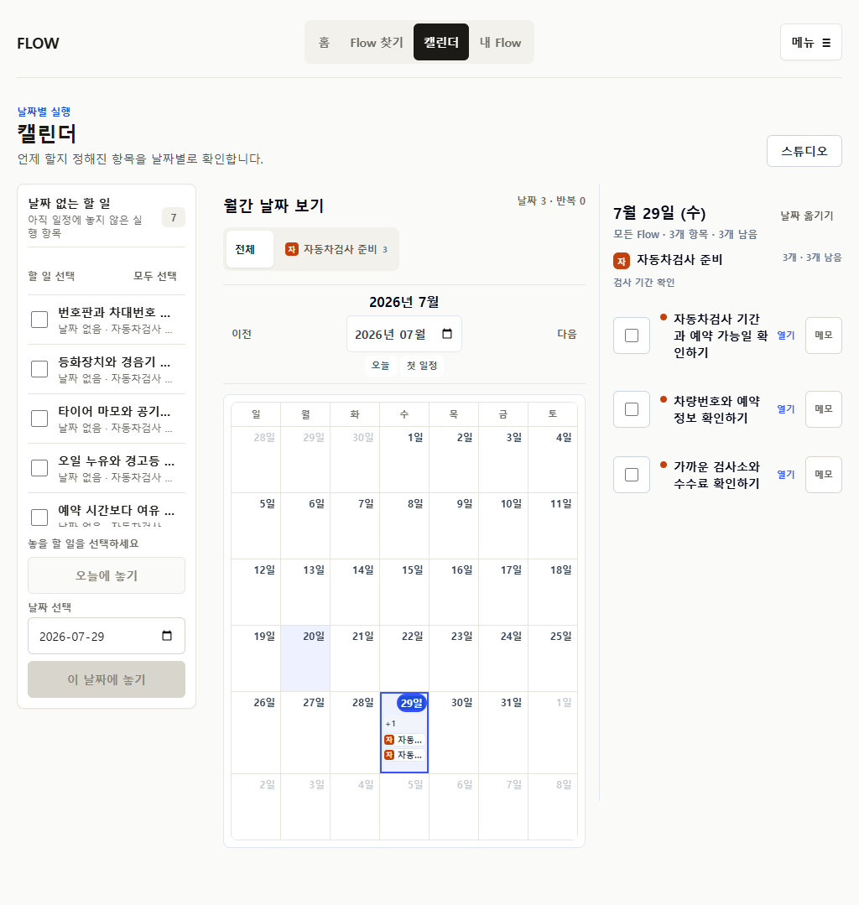
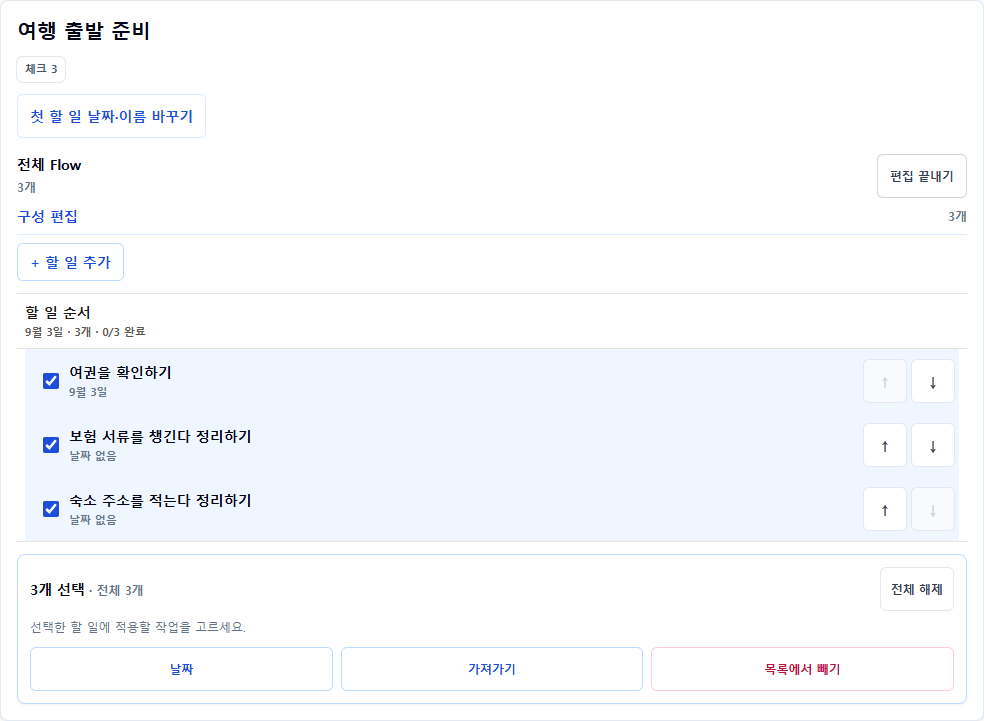
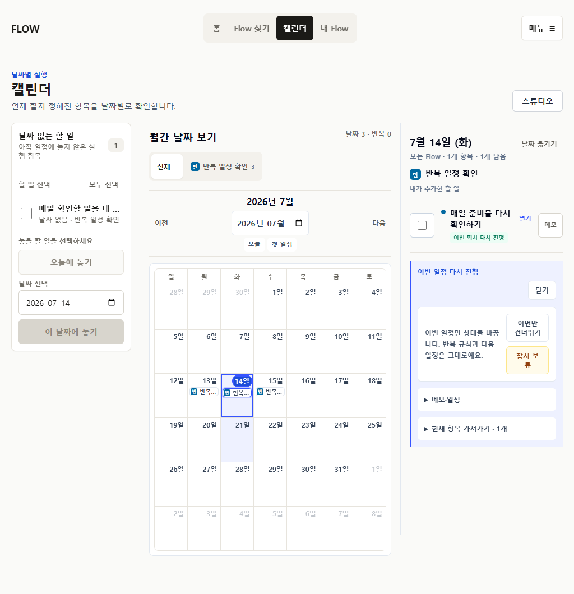

SUPPORTED
기준일 역산형
저장 receipt에서 5개 전체 Flow를 확인하고 완료·다시 열기까지 유지한다.

P26-19 · current browser internal gate
발견과 저장 이후 전체 Flow 확인, 조정, 일정 배치, 완료 취소, export를 390px과 1024px에서 다시 연결했다. 자동화 결과이며 실제 사용자 관찰은 0건이다.
저장 receipt에서 5개 전체 Flow를 확인하고 완료·다시 열기까지 유지한다.
날짜 없이 저장하고 Calendar tray에서 1개 또는 여러 항목을 배치·되돌린다.

series는 설정, occurrence는 실행으로 분리하고 완료·다시 열기와 RRULE을 맞춘다.

구성 편집에서 선택, 순서, 날짜 이동, export, 제거·복구 범위를 명확히 둔다.

원문 한 덩어리에서 5개 행동을 검토하고 4개 선택 결과를 그대로 저장·export한다.

반복 회차의 완료, 재개, 건너뜀, 보류, 복귀와 stable UID를 유지한다.

저장 직후 전체 Flow, compact execution row, source fragment와 실행 항목 분리, destination별 export receipt.
모바일 batch control 밀도, wide undated tray 제목 생략, 긴 Calendar composition, recurring detail action 밀도.
current_command + current_browser + current_screenshot + heuristic
observed_user_session_count = 0
production_verified = false
next = P26-20 release gate